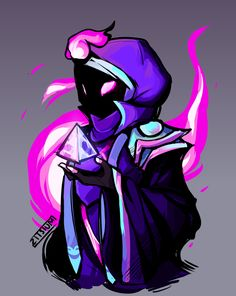
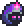
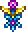
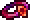

Classe de Mago
A classe de mago no endgame de Terraria é caracterizada por sua capacidade de causar dano mágico usando uma variedade de armas mágicas, acessórios especializados e armaduras específicas. Magos têm acesso a uma ampla gama de armas, como varinhas e cetros, e se beneficiam de acessórios e armaduras que aumentam o poder mágico. Estratégias incluem o uso de poções mágicas para aprimorar temporariamente atributos. Os magos são eficazes contra chefes e eventos desafiadores, demonstrando versatilidade e poder em situações de combate avançadas. O sucesso de um mago no endgame depende da escolha inteligente de equipamentos, estratégia e habilidade do jogador.

Elmo de Nébula
Peitoral de Nébula
Calças de Nébula
Nébula Armor
Last Prism

Celestial Starboard

Soaring Insignia

Master Ninja Gear
Celestial Emblem
Mana Cloak

Charm of Myths